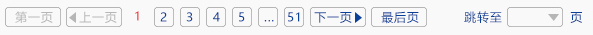

电话：800-8687-041
中文
| 登录 | 注册
- 首页
- 产品中心
- 技术支持
- 解决方案
- 计量和服务
- 新闻中心
- 访问论坛
- 关于我们
搜索
主页>技术支持>
常见问题
技术支持
TECHNICAL SUPPORT
输入关键字：


按内容类型
- 计量校准（251）
- 配置与安装（48）
- 故障诊断（106）
- 服务与维修（96）
- 其他问题
AV1443/A天量信号发生器运行过程中的某某现象改如何解决?
查看详情
AV1443矢量信号发生器在250kHz~44GHZ的频率范围内具备优异的矢调制性能,其基带信号发生器设置简单性能灵活、调制格式多,可以根据用户需要编辑、下载配置所需要的波形，进行各种信号模拟。AV1443失量信号发生器内部、外部矢量调制带宽大，具备80MHz内部调制带宽和2GHz外部调制带宽，可满足大带宽信号模拟需求...
36211手持式天线与传输线测试仪太重了拿不动怎么办?(50GHz~75GHz/75GHz~110GHz/110
GHz~170GHz/170GHz~220GHz/220GHz~325GHz/325GHz~ 500GHz)
查看详情
AV82406/A/B/C/D/E系列倍频源模块是在AV12413/AV12412和AV82401基础上推出的新代信号源扩频产品 相对于上代产品在输出功军应用便捷性等方面都有明显的改善，该系列信频源模块可与微波信号源构成秦米波信号发生系统倍频源模块所需射频信号通过射频电缆从合成信号源输入如果觉得这个东西太重了的话其实我也不知道怎么办...
相关产品的用户手册应该如何下载
查看详情
中电科技仪器每款产品都有其对应的产品手册，在每个产品详情页中，都会有就技术支持和资料库，具体的产品用户手册在资料库中就可以比较直观的找到，提供在线阅读和下载。您也可以直接搜索该产品的具体型号，进入产品详情页中...
AV1443/A天量信号发生器运行过程中的某某现象改如何解决?
查看详情
AV1443矢量信号发生器在250kHz~44GHZ的频率范围内具备优异的矢调制性能,其基带信号发生器设置简单性能灵活、调制格式多,可以根据用户需要编辑、下载配置所需要的波形，进行各种信号模拟。AV1443失量信号发生器内部、外部矢量调制带宽大，具备80MHz内部调制带宽和2GHz外部调制带宽，可满足大带宽信号模拟需求...
AV1443/A天量信号发生器运行过程中的某某现象改如何解决?
查看详情
AV1443矢量信号发生器在250kHz~44GHZ的频率范围内具备优异的矢调制性能,其基带信号发生器设置简单性能灵活、调制格式多,可以根据用户需要编辑、下载配置所需要的波形，进行各种信号模拟。AV1443失量信号发生器内部、外部矢量调制带宽大，具备80MHz内部调制带宽和2GHz外部调制带宽，可满足大带宽信号模拟需求...
AV1443/A天量信号发生器运行过程中的某某现象改如何解决?
查看详情
AV1443矢量信号发生器在250kHz~44GHZ的频率范围内具备优异的矢调制性能,其基带信号发生器设置简单性能灵活、调制格式多,可以根据用户需要编辑、下载配置所需要的波形，进行各种信号模拟。AV1443失量信号发生器内部、外部矢量调制带宽大，具备80MHz内部调制带宽和2GHz外部调制带宽，可满足大带宽信号模拟需求...
AV1443/A天量信号发生器运行过程中的某某现象改如何解决?
查看详情
AV1443矢量信号发生器在250kHz~44GHZ的频率范围内具备优异的矢调制性能,其基带信号发生器设置简单性能灵活、调制格式多,可以根据用户需要编辑、下载配置所需要的波形，进行各种信号模拟。AV1443失量信号发生器内部、外部矢量调制带宽大，具备80MHz内部调制带宽和2GHz外部调制带宽，可满足大带宽信号模拟需求...

800-8687-041
中电仪器技术论坛
其他链接：


关于中电仪器
新闻中心
公司简介
工作机会
采购指南
如何购买
索取报价
查看特价优惠
代理合作
技术支持
查找手册
更新固化软件/软件
访问论坛
联系我们
计量与服务
计量标准
仪器维修
培训与教育
公司链接
中国电科第41所
中国电科第40所
依爱消防
依爱通信
兴仪电子

中电科仪器仪表有限公司
青岛：
蚌埠
地址：山东省青岛市黄岛区香江路98号
邮箱：eiqd@ei41.com
地址：安徽省蚌埠市华光大道726号
邮箱：eibb@ei41.com
www.cetcei.com 中电科仪器有限公司
《中华人民共和国电信与信息服务业务许可证》编号：皖ICP备05003230
法律说明 | 网站地图